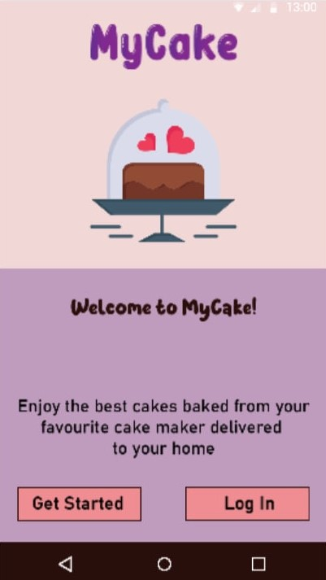
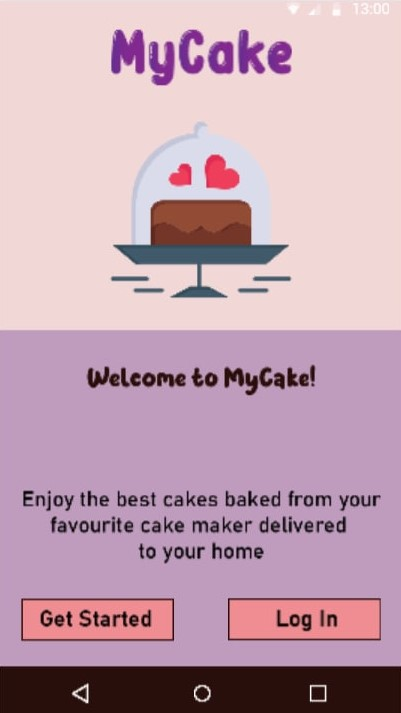
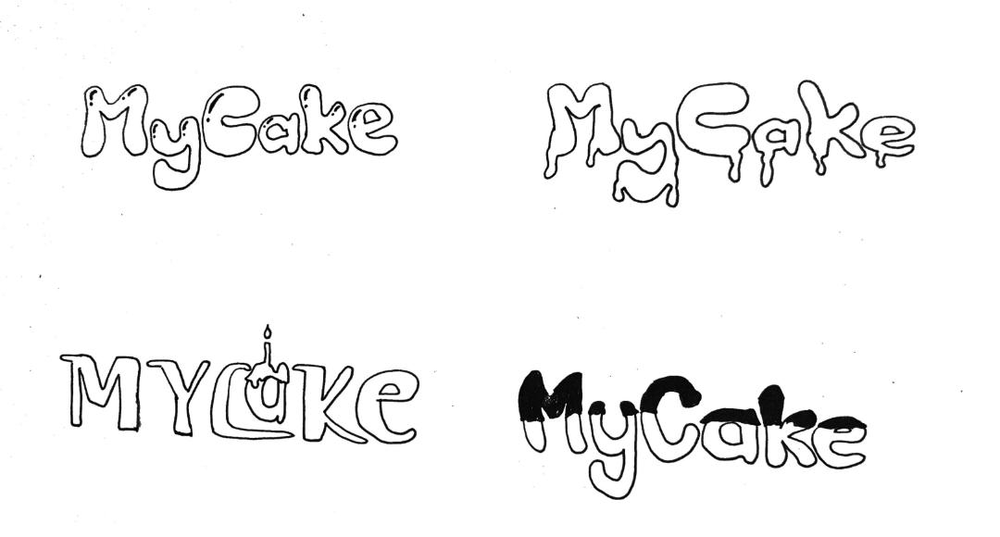

Mobile Application Prototype
Interactive Media Fundamentals Assignment
 



This a prototype of a mobile application that was designed on MarvelAppl.com for the Interactive Media Fundamentals unit. The class was assigned to design any mobile application that we liked, and I opted for a cake designing application that is not just a game, but it also let's its users order the cakes that they design. Different bakers can be chosen based on their profile and reviews. This concept was derived from my baking hobby.

This idea came about after conducting some research on creative or interesting application ideas. Some concepts which were considered include a rebrand of the Tallinja mobile app, and a smart sparking application. After some thought, however, I came up with the final idea, which was this cake design app, as I noticed that there are not many apps that offer this service. This makes my idea more unique and more likely to be appreciated by the users.
This led me to the first phase of designing, which was figuring out all of the wireframes and features to include and in which order they will follow each other. This included the landing page, the log-in or sign-up page, the different layers of the cake, cake accessories page, and order checkout. Also noted were the different flavours and fillings, as well as the payment confirmation message.

Next step was to design the logo of the mobile application. This came to be a bit challenging because logo design is not one of my best strengths. Therefore, I went with a simple wordmark logo with some cake-like effects on the characters, such as a sugar glaze. A cute cake was then designed to be the mascot of the app.
These were some of the ideas for the mascot:
When the style was decided, I moved on to prepare the icons. This was useful as MarvelApp.com only
provides a few ready-made elements, and this application required many unique icons.
The most challenging part of this phase was trying to style each icon isn such a way that all icons
match each other to follow through with consistency. This was my first attempt at such designs, and,
therefore, my knowledge on Adobe Illustrator was limited.
Some of these icons were done by simply tracing an image and adjusting it to my desired look, such as
the fruit icons and the flag icons.
The following images are snippets of my application:


Your submission exceeded expectations in conceptualizing the various concepts of interactive media and describing the use of contemporary media systems, such as the Wolt food app, including its user base and UI experience. The presented findings and research were structured and presented in a professional manner.
You presented a thorough analysis of an existing mobile application through wireframes and graphic elements. The development of your own mobile application idea is well-presented with a good range of wireframes. Your exploration of various elements for the application creation led to an interesting idea.
Your mobile application idea was well-refined with an average visual quality and a good number of screens. It functioned well, but with some accessibility issues. Some design elements could have been distributed better. Researching UI design trends could improve the dated aspects. Overall, a good job for a first-time mobile application.